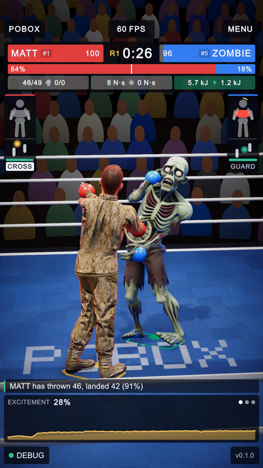
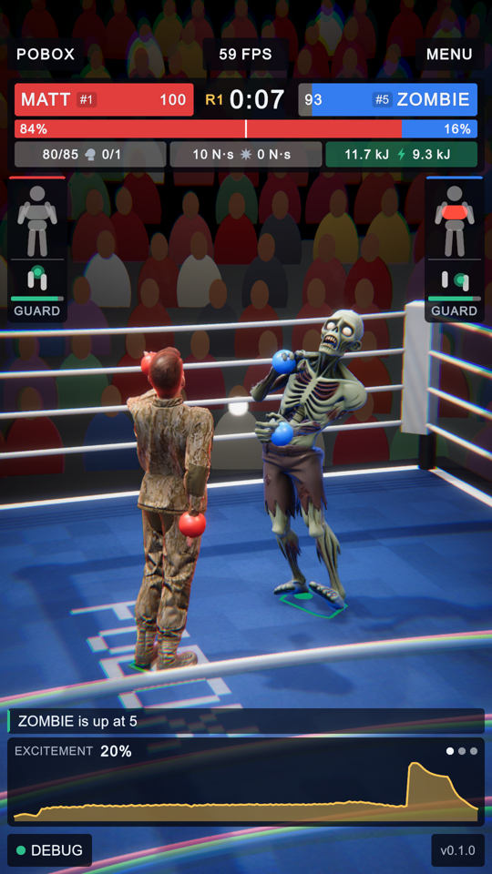
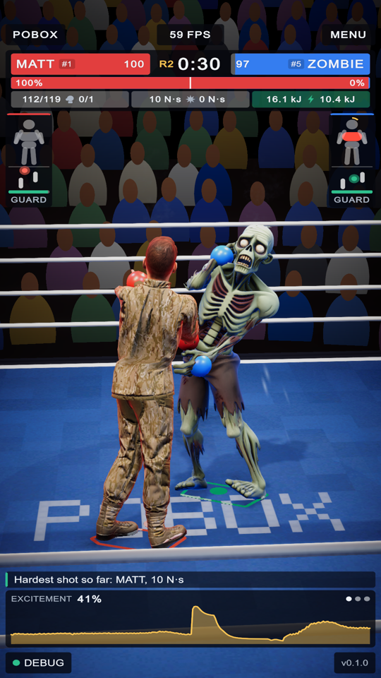
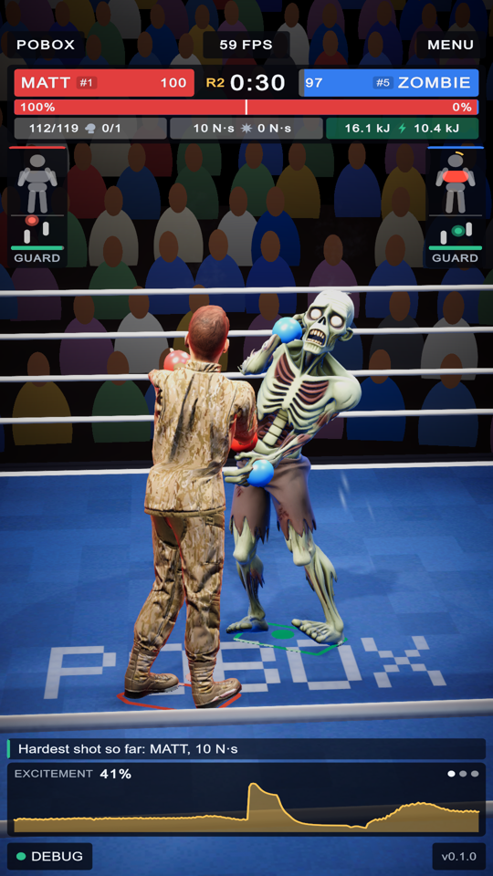
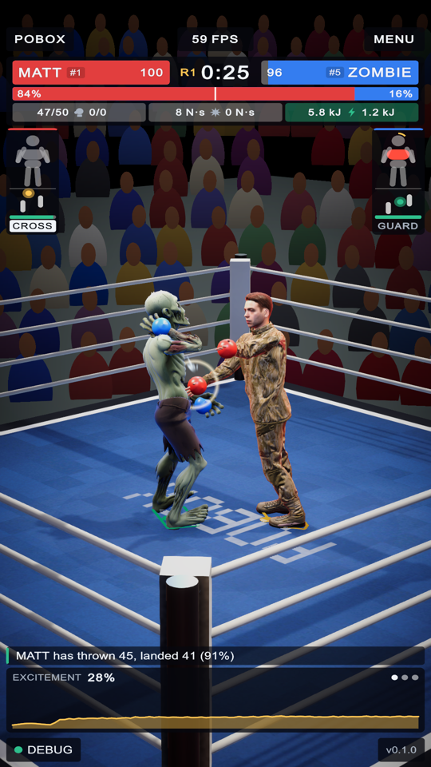
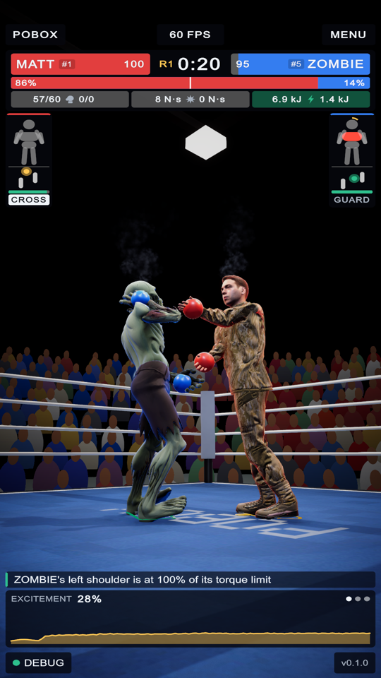

Physics-driven effects: five additions that read MuJoCo's own state
3 October 2026 · every picture is the arena rendered at 1080 x 1920 with the HUD laid over it, Matt against Zombie · numbered pins mark what changed
The list asked for five out of ten. Six of the ten were already in the game from the broadcast pass of 1 October (impact particles scaled by impulse, layered impact sound, canvas decals, camera shake and a shock ring, bruises and sweat, the flash of the ring lamps on a knockdown), so the five were chosen from what was missing. Each one is driven by a number MuJoCo or the fighter's own bookkeeping already holds.
All 29 play-mode tests pass, one of them new: a knockdown has to be reported by MuJoCo's contacts and has to pulse the picture.
| # | What | Driven by | From the list |
|---|---|---|---|
| 1 | Bodies landing on the canvas | the force MuJoCo's solver put through the floor into each shape of a boxer | 1, 9 |
| 2 | Boots scraping the canvas | how fast a planted foot is sliding | 5 |
| 3 | The picture pulses on a hard punch | how far the punch's impulse is above what these two usually land | 2, 7 |
| 4 | Follow-spots | where each boxer is, and the impulse it has just landed | 8 |
| 5 | Steam off a tiring boxer | the tank, which is the mechanical work its joints have done | 10 |
1. Bodies landing on the canvas, measured
A landing used to be one event a fall, guessed from how fast the pelvis was dropping. It is now read from MuJoCo's contact list: every shape of a boxer other than its feet that comes down on the floor, having been clear of it for a fifth of a second, raises an event carrying the impulse the solver gave it. Dust, the thud, the scuff on the cloth and the shake of the ropes all take their size from that number, so a glove put down to get up is a pat and a back hitting the canvas is the whole thing.
One forced knockdown of Matt and his getting up gave eleven landings between 7 and 166 N s:
| Impulse, N s | 75.7 | 15.6 | 45.1 | 74.4 | 45.0 | 13.0 | 8.5 | 14.2 | 124.2 | 6.9 | 166.1 |
|---|
The effects are at full size from 120 N s. Only landings over 30 N s mark the cloth.
2. Boots scraping the canvas
A foot that is planted and still moving is being dragged or turned on. Each boxer has a looping scrape at its feet (a second of filtered noise made at start-up, no new sound file) whose loudness and pitch follow that sliding speed: silent under 0.12 m/s, full at 1.2 m/s. In the bout sampled, Matt's feet slid at up to 0.6 m/s and Zombie's hardly at all.
3. The picture pulses on a hard punch


123- Bloom. Anything bright flares: here a lamp behind the ropes.
- Fringing. Colours part at the edges of the frame, most on the ropes.
- The lens gives. The picture bulges slightly towards its edges.
A second volume sits over the house look. Its weight is how far a clean punch was above what the two boxers usually land (the same reading the crowd's gasp and the camera flashes use), it is full on a knockdown, and it is gone in 0.28 s. It also carries motion blur, which costs nothing while the weight is zero. The HUD is drawn afterwards and is not touched. The still on the right is the pulse held at full weight for the picture; in a bout it is a flicker, and between Matt and Zombie few punches are far enough above the usual to raise it.
4. Follow-spots


12- The boxer is picked out. Zombie's head and shoulders are lit against the crowd.
- A pool on the canvas under the pair.
The two sweep lamps were used only for the walk-on and the winner. In the fight each now stays aimed at its own boxer, dark, and comes up when that boxer lands a clean punch: brighter the harder it was against the pair's usual, up at once and away in under a second. The picture is one paused frame with both lamps at the level a hard punch gives.
5. Steam off a tiring boxer


12- Zombie and
- Matt, each with vapour rising off the head and carried a little by the head's own movement.
The tank falls with the mechanical work a boxer's joints do. Steam starts when it is under 97% and is at its full nine puffs a second at 60%. In the bout sampled the tank went to about 0.8 after a knockdown and back near full at each round break, so in play it is a wisp now and then, most after a flurry. The picture has it forced to the full rate.
Left out
| From the list | Why |
|---|---|
| 3 impact audio, 6 decals, most of 1 and 7 | Already in the game since 1 October; this pass only feeds them better numbers. |
| 4 advanced shaders, Blender | Nothing here needed a new model or shader. Worth doing when there is a specific object to make. |
| 10 mesh deformation, heat glow | Bruises where punches land and a wet sheen as the tank falls are already drawn; the joint glow was removed at the owner's request on 1 October. |
| 9 the physics model | The fight is stepped by MuJoCo itself through the official plugin, the same model the trainer uses, with no Unity physics in the scene. There is nothing more accurate to switch to; what changed is that one more effect now reads it directly. |
Not checked
Nothing was heard by a person and nothing was run on a phone. The cost of the pulse on a phone (lens distortion, fringing and motion blur for a quarter of a second) is not known. Two extra real-time spot lights are now lit for moments during the fight; in the editor the frame rate stayed at 59 to 60.